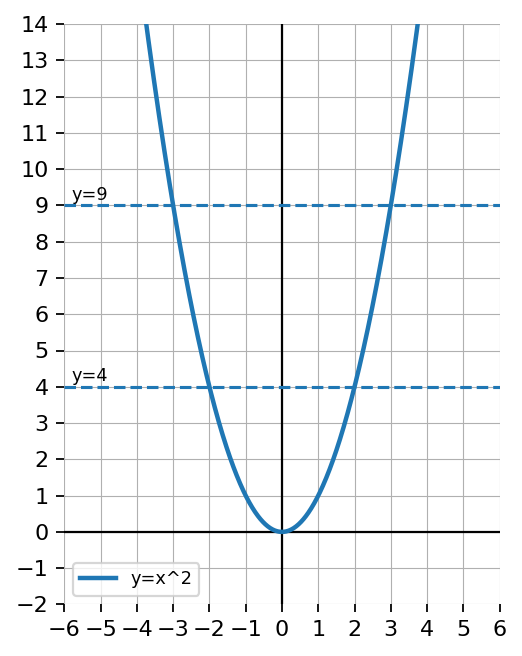
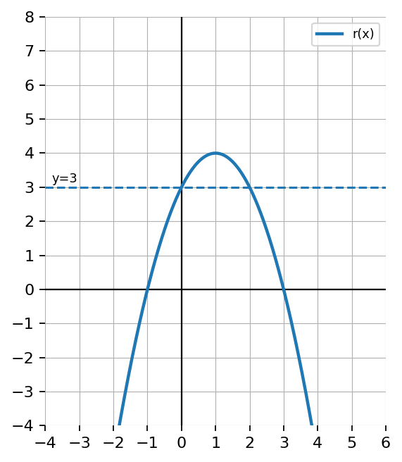
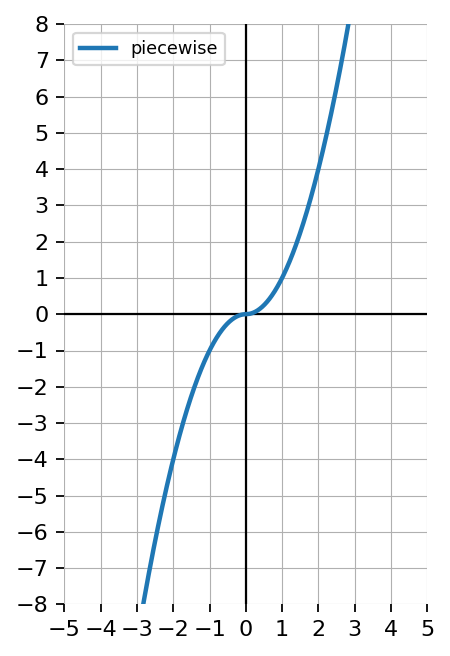
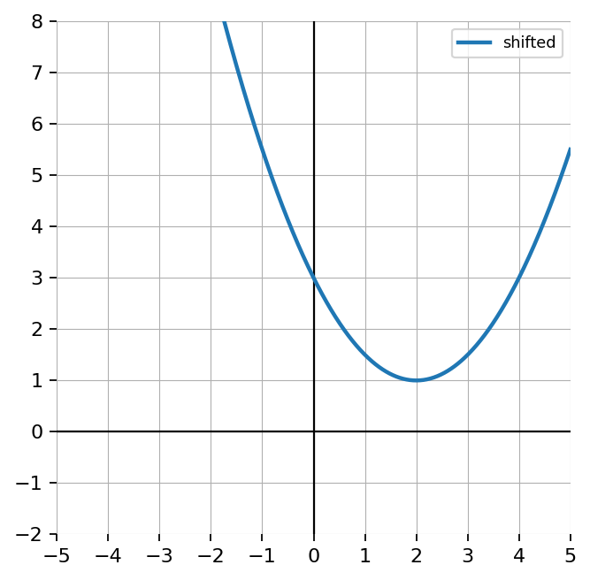
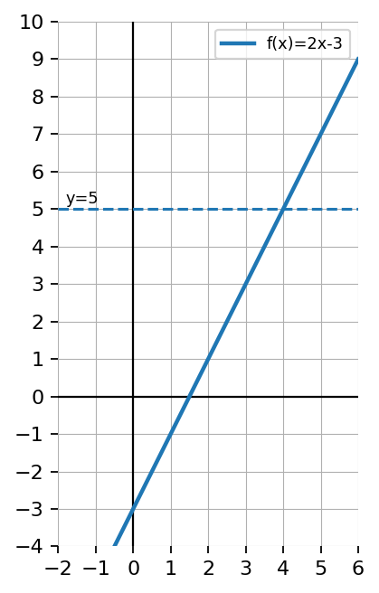

Practice Set 3.1.3
Evaluate:
- \(\sqrt{144}\)
- \(\sqrt[3]{-216}\)
- \(\sqrt{0}\)
Solve \(7(x+4)^2=175\). Then verify both solutions.
Use the graph of \(y=x^2\).
- Explain why horizontal lines above the vertex intersect the graph twice.
- Explain why this creates two solutions.

A student says: “Square root equations and cube root equations are basically the same.” Write a response comparing structure, number of solutions, graph behavior, and verification.
Let \(m(x)=4x-7\). Evaluate:
- \(m(0)\)
- \(m(5)\)
- \(m(-2)\)
Solve \(r(x)=12\) when \(r(x)=2x^2-6\).
Let \(A(t)=5t+12\). Find the input \(t\) when \(A(t)=37\).
Let \(B(x)=(x-4)(x+2)\). Solve \(B(x)=0\).
Let \(k(x)=x^2+2x-8\).
- Solve \(k(x)=0\) by factoring.
- State the ordered pairs where the graph crosses the \(x\)-axis.
Let \(m(x)=3x^2-12\).
- Solve \(m(x)=0\).
- Solve \(m(x)=15\).
- Explain why the second equation has different solutions than the first.
The graph of \(r(x)=-x^2+2x+3\) and the horizontal line \(y=3\) are shown.
- Solve \(r(x)=3\) graphically.
- Solve \(r(x)=3\) algebraically.
- Explain why one solution is easy to miss if you only estimate from the graph.

Choose a linear function and a factorable quadratic function that both have \(f(2)=6\). Compare how solving \(f(x)=6\) is different for the two functions.
Match each description to even, odd, or neither.
- A graph symmetric about the \(y\)-axis.
- A graph symmetric about the origin.
- A graph with no symmetry about the \(y\)-axis or origin.

Determine whether the function is even, odd, or neither. Show algebraic work and explain your conclusion.
\(f(x)=x^3+x\)
Consider the piecewise-defined function.
\(f(x)=\begin{cases}x^2 & x\ge 0\\ -x^2 & x<0\end{cases}\)
- Classify the function as even, odd, or neither.
- Justify algebraically.
- Describe its symmetry.

A student says, “If a graph looks symmetric, then it must be even or odd.”
- Is this always true?
- Use the figure or another example as a counterexample.
- Explain the difference between visual symmetry and the algebraic definitions of even and odd functions.

Check Your Understanding 3.1
Let \(f(x)=2x^2-3\). Evaluate:
- \(f(2)\)
- \(f(-3)\)
Use the table for \(f(x)\).
| \(x\) | -2 | -1 | 0 | 1 | 2 |
|---|---|---|---|---|---|
| \(f(x)\) | 7 | 3 | -1 | 3 | 7 |
- Find \(f(-1)\).
- Find \(f(2)\).
- Find the value(s) of \(x\) where \(f(x)=7\).
Solve \(f(x)=9\) when \(f(x)=3x-6\).
Use the table to solve \(q(x)=6\).
| \(x\) | -4 | -2 | 0 | 2 | 4 |
|---|---|---|---|---|---|
| \(q(x)\) | 14 | 6 | 2 | 6 | 14 |
Let \(f(x)=x^2-6x+8\).
- Solve \(f(x)=0\) algebraically.
- Explain what the solutions mean in terms of the graph of \(y=f(x)\).
The graph of \(f(x)=2x-3\) and the horizontal line \(y=5\) are shown. Use the graph to solve \(f(x)=5\), then verify algebraically.

Two students solve \(f(x)=0\) for \(f(x)=x^2-7x+10\).
Student A: \((x-5)(x-2)=0\), so \(x=5\) or \(x=2\).
Student B: \(x^2=7x-10\), so \(x=7\) or \(x=-10\).
Which student is correct? Explain the error in the other solution.
A classmate claims, “Solving \(f(x)=a\) is the same thing as evaluating \(f(a)\).” Write a response that uses an example, algebra, and words to prove or disprove the claim.